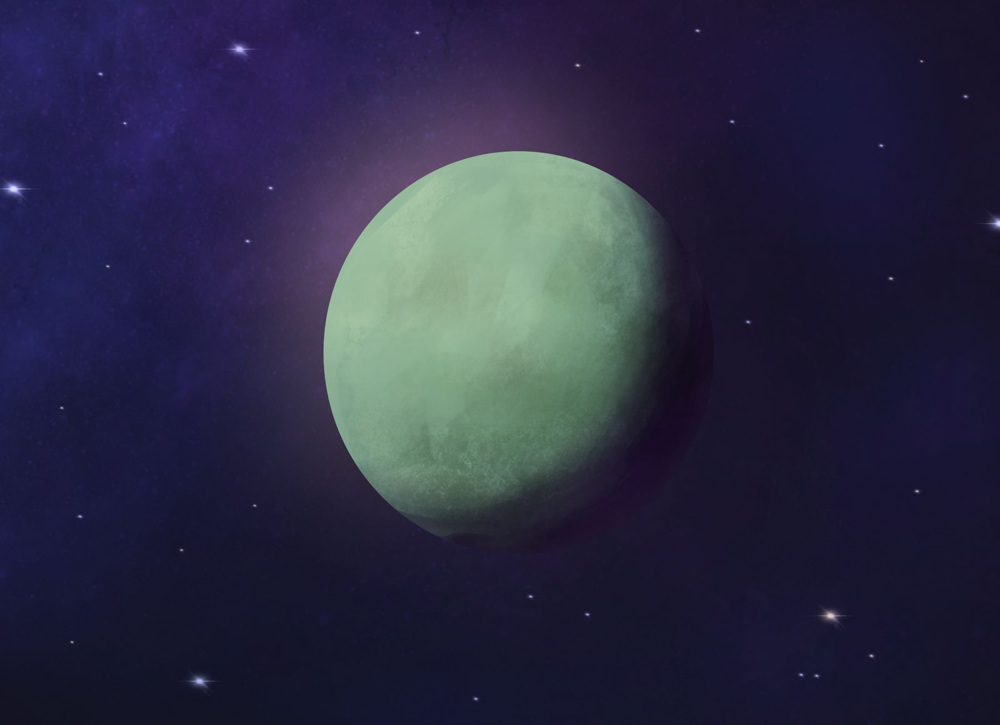

1. Introduction to Exoplanets

Ever wondered how many planets are out there, beyond our own solar system? It's like the universe is a giant playground filled with worlds to discover! Esses planetas, que orbitam outras estrelas, são chamados de exoplanetas. Eles são como primos distantes da Terra, cada um com suas próprias características e mistérios.